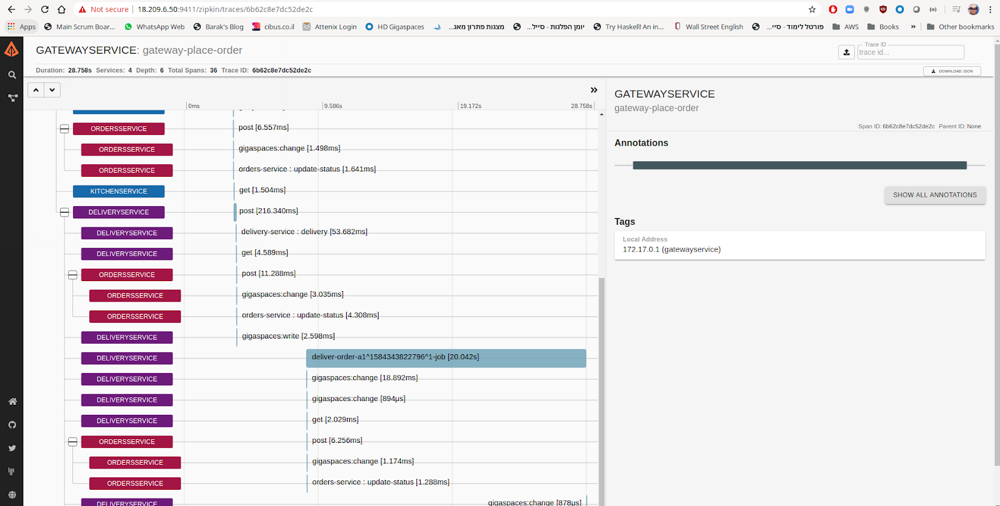

This topic describes how to leverage Distributed Tracing in your GigaSpaces cluster to identify latency issues.
Overview
Distributed tracing is quickly becoming a must-have component in the tools that organizations use to monitor their complex, microservice-based architectures. This helps engineers to pinpoint errors and identify performance bottlenecks.
GigaSpaces monitoring, part of the GigaOps Stack, includes Zipkin, a distributed tracing system that gathers timing data to enable troubleshooting latency issues in the system. This enables more effective performance tuning.
OpenTracing
OpenTelemetry is a vendor-agnostic API for tracing and allows users to instrument their own services or libraries for distributed tracing.
For more information, view https://opentracing.io/docs/overview/https://opentelemetry.io/docs/
Tracing with
Proxy-Side Tracing
GigaSpaces allows its users to trace their code by using OpenTracingOpenTelemetry spans in the proxy side.
In order to turn tracing on, you must configure a Tracer and register it with the GlobalTracer.registerIfAbsentGlobalOpenTelemetry.getTracer method provided by the OpenTracingOpenTelemetry library. An example of such a Tracer is ZipkinTracer that reports the traces to a Zipkin server.
Every synchronous method in the GigaSpaces API will add a span to the active span if it exists. When the span is finished it is reported to the tracing endpoint (e.g. Zipkin).
The following example assumes that a Tracer and GigaSpaces proxy are defined. It creates a new span in the user's code and calls the readMultiple method that adds a new span to the lifecycle of the flow:
The following example assumes that a Tracer and GigaSpaces proxy are defined. It creates a new span in the user's code and calls GigaSpaces operations that are automatically traced within the span lifecycle:
// define Tracer and GigaSpaces proxy
GlobalTracer.registerIfAbsent(tracer);
io.opentracing.Span span = tracer.buildSpan("FirstSpan").start();
gigaSpaces.readMultiple(new Person());
span.finish();
@Autowired
GigaSpace gigaSpace;
Tracer tracer = GlobalOpenTelemetry.getTracer("com.myapp");
Span span = tracer.spanBuilder("process-order").startSpan();
try (Scope scope = span.makeCurrent()) {
// All GigaSpace calls inside this scope are automatically traced
Order order = gigaSpace.readById(Order.class, orderId);
order.setStatus(OrderStatus.PROCESSED);
gigaSpace.write(order);
} catch (Exception e) {
span.setStatus(StatusCode.ERROR, e.toString());
span.recordException(e);
throw e;
} finally {
span.end();
}
Tracing Information per Partition
A space is typically split into multiple partitions for scale. For operations that run concurrently on different partitions its valuable to split the trace per partition to identify slow partitions.
Since version 17.3.0, every partition-spanning operation reports individual timings and success or failure. In addition, the 'related query' attribute was added to give a better understanding of the exact operation.

Zipkin Built-In Tracer
GigaSpaces provides a built-in bean com.gigaspaces.tracing.ZipkinTracerBean that can be used to send the traces to Zipkin as the tracing endpoint. This bean will register a GlobalTracer that can be used by the user's code. Same GlobalTracer will be used in the GigaSpaces proxy for the synchronous methods.
@Bean
public ZipkinTracerBean tracerBean() {
return new ZipkinTracerBean("GatewayService")
.setZipkinUrl("http://zipkin.company.com")
.setStartActive(true);
}
Spring bean (recommended):
<bean id="zipkinTracer" class="com.gigaspaces.tracing.ZipkinTracerBean"
init-method="start" destroy-method="destroy">
<!-- Required: logical name that identifies this service in Zipkin UI -->
<constructor-arg value="my-service"/>
<!-- Optional: Zipkin base URL. Default: http://zipkin.service.consul:9411 -->
<property name="zipkinUrl" value="http://zipkin-host:9411"/>
<!-- Set to true to export spans (false = noop, no network traffic) -->
<property name="startActive" value="true"/>
</bean>
This bean is part of the xap-reporter module. To use it you need to add it to your processing unit jar file with its dependencies.
<dependency>
<groupId>org.gigaspaces</groupId>
<artifactId>xap-reporter</artifactId>
<version>15.2.017.2.0</version>
</dependency>
The screenshot below shows a "trace" of data sampled by Zipkin of multiple microservices running on a GigaSpaces distributed cluster:

Elastic Grid
One of the built-in services that are provided in ElasticGrid is Zipkin service. In addition, if the above ZipkinTracerBean is configured, it will automatically detect that it is running in ElasticGrid and therefore will allow you to turn the global tracing on and off by monitoring Consul for the key "gigaspaces/tracing".
Additional Resources
ElasticGrid
This topic describes how to turn on distributed tracing in GigaSpaces (XAP) and connect it to your observability backend to identify latency issues and performance bottlenecks.
Overview
Distributed tracing is a vendor-agnostic way to gather timing data and troubleshoot latency issues across your system architecture. GigaSpaces includes native support for the OpenTelemetry SDK (v1.62.0), allowing you to seamlessly trace Space operations and export spans to your preferred observability backend (for example, Jaeger or the OpenTelemetry Collector) via OTLP.
Turning on Tracing: com.gs.tracing.exporter
By default, tracing is set to a no-op (which incurs almost no performance cost and sends nothing). To enable tracing, configure the com.gs.tracing.exporter property.
| Value |
Result |
none (default) |
No-op: nothing is sent anywhere. |
logging |
Spans are written to the process log, useful for local debugging. |
otlp |
Spans are exported over OTLP/HTTP to your observability backend. |
You must set this in GS_OPTIONS_EXT (for example, inside setenv-overrides.sh) so that every JVM gets the same configuration:
export GS_OPTIONS_EXT="-Dcom.gs.tracing.exporter=otlp \
-Dotel.exporter.otlp.endpoint=http://<backend>:4318 \
-Dotel.exporter.otlp.headers=<auth-header>=<value>" # optional, e.g. an API key
Once configured, restart your cluster:
./bin/gs.sh host kill-agent && ./bin/gs.sh host run-agent --auto --gsc=1 --restv3
Standard OpenTelemetry Configuration
Along with the XAP-specific com.gs.tracing.exporter property, the system relies on standard OpenTelemetry SDK configuration properties (otel.* system properties or OTEL_* environment variables). These are read once per JVM at startup when the exporter is set to otlp.
Naming Convention: Every property can be defined as a system property (-Dotel.exporter.otlp.endpoint) or an environment variable (OTEL_EXPORTER_OTLP_ENDPOINT). Use whichever best fits your deployment.
Precedence: -Dotel.* system property > OTEL_* environment variable > XAP's default values.
Known Restrictions
-
Supported Protocol: Only the OTLP/HTTP sender is shipped (defaults to http/protobuf). otel.exporter.otlp.protocol=grpc will not work.
-
Exporters: Third-party exporters/samplers requiring extra jars (such as zipkin, prometheus, b3, jaeger) are not shipped. You must use otlp, logging, or none, alongside tracecontext/baggage.
-
Metrics: Enabling otel.metrics.exporter or otel.logs.exporter will send OpenTelemetry's internal metrics/logs, not GigaSpaces metrics. (GigaSpaces metrics use Micrometer and are configured independently.)
Where to Put Settings
| Option |
Reaches every GigaSpaces JVM? |
Visible in ps/CLI? |
Recommended Use Case |
-Dotel.… in GS_OPTIONS_EXT |
Yes |
Yes |
Endpoints, TLS file paths, samplers, and non-secret configs. |
OTEL_… environment variable |
Yes (GSA-spawned GSC and REST v3 JVMs inherit it) |
No |
Secrets (API keys, authorization tokens). |
| OpenTelemetry Collector config |
GigaSpaces only needs the Collector's address |
N/A |
Keeping all backend credentials completely out of XAP. |
Setup Recipes and Endpoint Rules
When specifying your endpoint, use your backend's OTLP/HTTP address (conventionally port 4318, not the 4317 gRPC port). Provide the base URL (for example, https://host:4318), and the SDK will automatically append /v1/traces.
Below are common setup recipes (to be used in addition to -Dcom.gs.tracing.exporter=otlp):
| Use Case |
Additional Settings |
| Unsecured (local Jaeger/Collector) |
-Dotel.exporter.otlp.endpoint=http://collector:4318 |
| TLS, public CA (SaaS, HTTPS) |
-Dotel.exporter.otlp.endpoint=https://otlp.vendor.example (uses the JDK's default trust store) |
| TLS, private / self-signed CA |
Add -Dotel.exporter.otlp.certificate=/path/ca.pem |
| Mutual TLS |
Add -Dotel.exporter.otlp.client.key=/path/client.key
Add -Dotel.exporter.otlp.client.certificate=/path/client.pem
|
| API key / token header |
OTEL_EXPORTER_OTLP_HEADERS="<header-name>=<key>" |
| Bearer token |
OTEL_EXPORTER_OTLP_HEADERS="Authorization=Bearer%20<token>" |
Combined Secure Example: This example demonstrates TLS with a private CA, keeping the API key secret by passing it as an environment variable.
export OTEL_EXPORTER_OTLP_HEADERS="api-key=${TRACING_API_KEY}"
export GS_OPTIONS_EXT="-Dcom.gs.tracing.exporter=otlp \
-Dotel.exporter.otlp.endpoint=https://otel.internal.example:4318 \
-Dotel.exporter.otlp.certificate=/opt/certs/internal-ca.pem"
./bin/gs.sh host run-agent --auto --gsc=2 --restv3
What Gets Traced?
Context propagates automatically, but not every Space operation produces its own dedicated span.
-
Covered Operations (Generate Spans): read, readByIds, readMultiple, take, takeIfExists(ById), takeById (Class variants only), takeMultiple, write, writeMultiple, change, aggregate.
-
Not Covered (Participate in trace without creating a new span): readById, readIfExists(ById), takeByIds, takeById(IdQuery …), count, clear, execute, async variants, iterator.
-
Server-side (GSC): Currently, only single reads generate a server-side span (gigaspaces:space_query).
-
Client-side traces are broken down per partition so that slow partitions can be identified.
Do not enable the older ZipkinTracerBean together with com.gs.tracing.exporter. Both will attempt to own the process's global tracer and cause conflicts.
Troubleshooting
Export failures will never break GigaSpaces operations. If an export fails, the SDK simply logs the error and drops the batch. If spans aren't appearing, check your logs/…-restv3_….log or logs/…-gsc_….log for Failed to export spans:
| Log Message |
Cause |
Resolution |
SSLHandshakeException: … PKIX path building failed |
Server certificate is not trusted (private CA). |
Set otel.exporter.otlp.certificate=<ca.pem>. |
HTTP status code 401 or 403 |
Missing or incorrect authentication header. |
Check OTEL_EXPORTER_OTLP_HEADERS formatting and values. |
| Handshake failure against an mTLS server |
Missing or incorrect client certificate. |
Set client.key (must be PKCS#8) and client.certificate. |
HTTP status code 404 |
Wrong path (for example, a traces-only endpoint missing /v1/traces). |
Use the base-URL property, or manually include the path. |
| Connection refused / timeout |
Wrong host/port, or aimed at the gRPC port (4317). |
Switch to the OTLP/HTTP address (4318). |